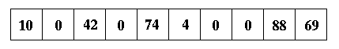

|
Suppose tsize is 10, key is 8, the hash function is (key%tsize), and the current state of the hash table is:

Question 16:
What does implementation (a) above return when called with these parameters?
Question 17:
What does implementation (b) above return when called with these parameters?
Question 18:
What does implementation (c) above return when called with these parameters?
Question 19:
What does implementation (d) above return when called with these parameters?